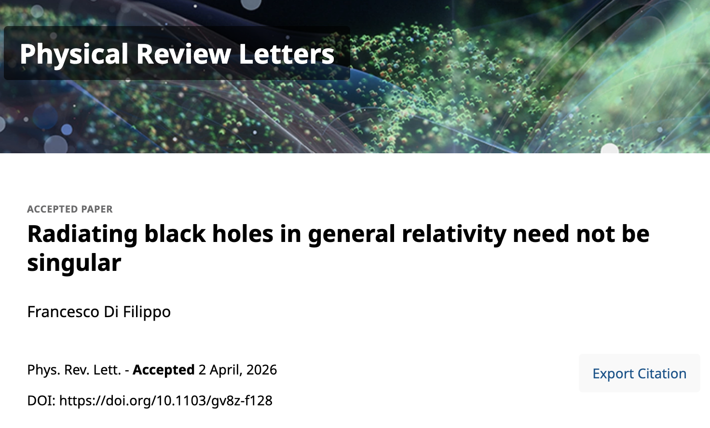
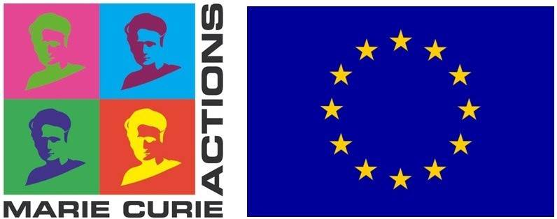
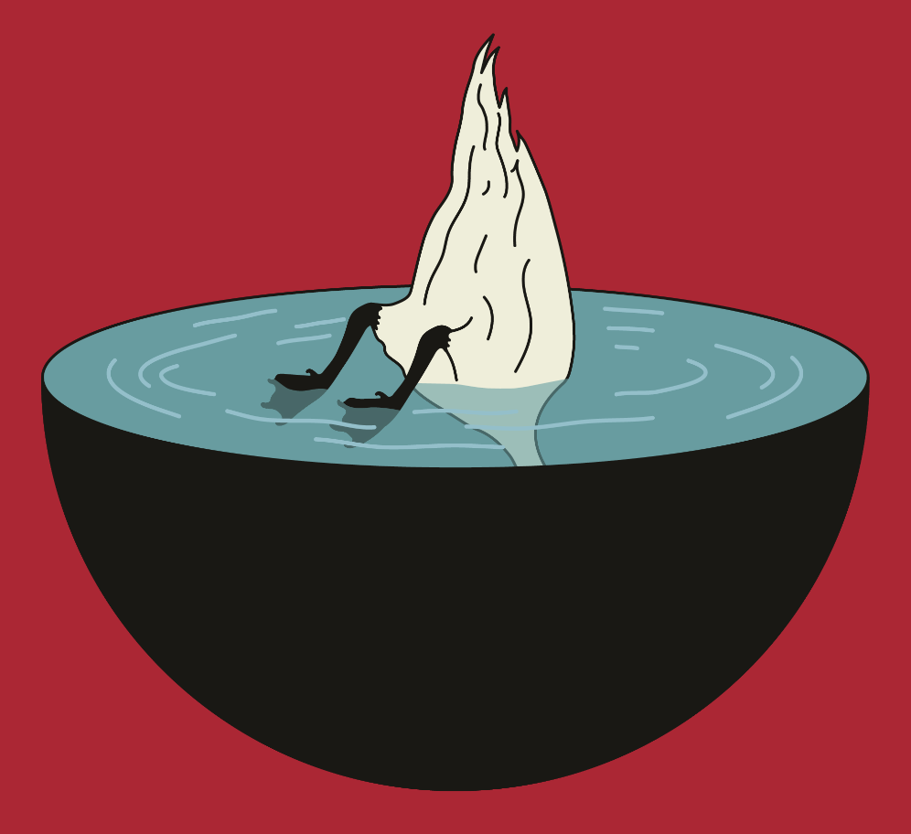
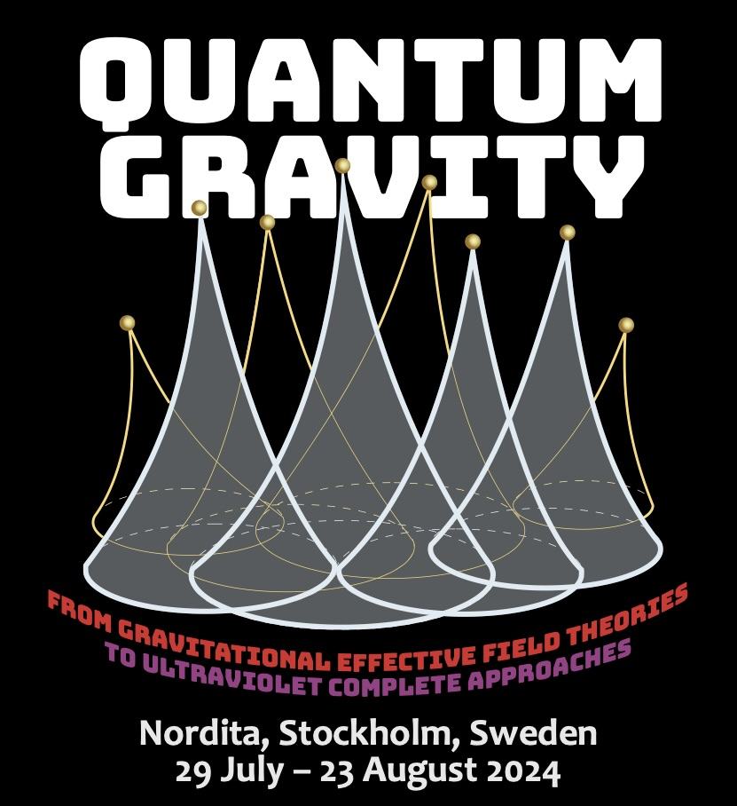
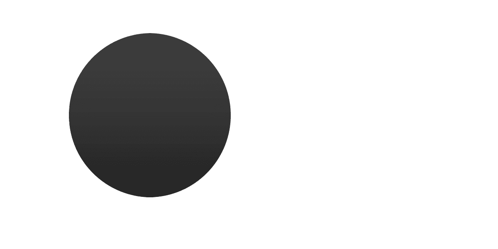

About Me
I obtained my Ph.D. in astroparticle physics at SISSA (Trieste, Italy) under the supervision of Stefano Liberati. After postdoctoral positions in Kyoto and Prague, I am currently a Humboldt Postdoctoral Fellow at the Institute of Theoretical Physics, Goethe University Frankfurt, Germany.
My research focuses on black hole physics, with particular interest in semiclassical effects and the singularity problem. A complete list of my publications is available on my INSPIRE profile.


Curriculum Vitae
Contact: difilippo AT itp.uni-frankfurt.de
Fellowships and Awards: MSCA fellowship, FCT Fellowship (declined), Humboldt Fellowship, JSPS fellowship; Václav Votruba Prize, fifth prize 2024 Awards for Essays on Gravitation by the Gravity Research Foundation Awards.
Total ~ €530.000.
Publication Record: Author of 38 publications, total citations: 2099 and h-index: 23 (according to Inspire-hep database as of Febrary 12th 2026).
Event Organizer: Organizer of multiple events and workshops, including being one of the three founders of the Black Holes Inside and Out conference series, the largest conference devoted to black hole physics to date.
Invited Speaker and Panellist: Invited speaker at 10 international conferences or workshops, invited panellist at 2 panel discussions, and invited to deliver several seminars in world-leading institutes.
Highlights
Paper published on PRL
[April 2026] My recent paper "Radiating Black Holes in General Relativity Need not be Singular" was just published on Physical Review Letters!

Marie Curie Postdoctoral Fellowship
[March 2025] I have been awarded the Marie Curie fellowship.

Frankfurt
[February 2025] I just moved to Frankfurt for my new position as a Humboldt fellow. Excited for yet another new beginning.

Black Holes Inside and Out 2024
[August 2024] I was a member of the Scientific organizing committee of the second edition (this time in person!) of Black Holes Inside and Out.

Nordita Summer School
[July 2024] I gave a short course on quantum effects in black holes spacetimes during the program “Quantum Gravity: From Gravitational Effective Field Theories to Ultraviolet Complete Approaches” in Nordita.
The lecture notes of the school were collected into a book available on arXiv.

Black Holes Inside and Out 2021
[August 2021] I organized the first edition of the Black Holes Inside and Out conference (online) All the contributions of the conference can be found at this link.

Videos of talks/lectures
The videos of some of my presentations are available online
- 27/06/2025 — Invited talk at the conference “From Puzzles to New Insights in Fundamental Physics” in Campagna (SA), Italy. Towards a non singular paradigm for black holes
- 08/04/2025 — Seminar in Aveiro. Towards a non singular paradigm for black hole physics
- 12/12/2024 — Lectures at the Nordita Ph.D. school Introduction - Hawking radiation - Semiclassical stress-energy tensor - Information loss problem.
- 23/10/2023 — Invited talk at the conference “Puzzles in the Quantum Gravity Landscape”, Perimeter Institute, Canada. Hearts of Darkness: Nonsingular Black Holes Beyond General Relativity